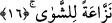
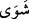
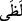
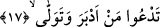

“Çünkü o ateş”. Azâb kelimesinin zikredilmesiyle kendisine delâlet edilen ateş.
Bundan maksad da cehennemdir. “Hâlis alevdir.” “Lezâ/hâlis alev” kelimesi,
cehennem için özel isimdir. Aynı zamanda cehennemin ikinci derekesine verilen bir
isimdir. Dumansız hâlis alev mânâsına gelen “el-Lezâ”dan alınmıştır. Saf ateş olduğu
için harâreti çok kuvvetlidir ve bu sebeple son derece yakıcıdır.
Cümleyi tahlil edecek olursak “lezâ”, “inne”nin haberidir. Mânâsı cehennem bu isimle
isimlendirilmiştir, demektir. Bu lezâ kelimesi ile hâlis alev de kasdedilmiş olabilir. Bu
takdirde kelime hiçbir te’vile gitmeksizin haber olur.
Kâşifî’nin dediği gibi; “Doğrusu günahkârın fidye verdiği şey, cehennem ateşinin hâlis
bir alevinden başkası değildir.” Keşfü’l-esrâr’da gelmiştir ki: “O alevli bir ateştir.”
16. Derileri kavurup soyar.
Burada “ /nez’”kelimesi geçmektedir. “Nez’” bir şeyin, yerinden çekilmesi ve
sökülmesi demektir. “
/Şevâ” ise uçlar, yâni el, ayak gibi kaybedildiğinde insanın
ölümüne yol açmayan organlar demektir. “Nezzâaten” kelimesinin mansûb olarak
gelmesi, meselenin korkunçluğunu ve dehşetini vurgulamak içindir. Bu durumda mânâ
şöyle olur: “
/Lezâ” ile, insanın vücûdunun etrafında mevcûd olan organlarını çeken
ve şiddetli harâreti sebebiyle kazandığı yakma gücü sâyesinde onları yerinden söken
ateşi kasdediyorum. Bu uzuvlar daha sonra tekrar eski hâline gelir ve bu azâb böylece
ebediyyen devam edip gider.
Şevâ, uzuvlar mânâsına geldiği gibi “şevât” kelimesinin çoğulu olarak baş derisi
anlamına da gelebilir. Buna göre ateş, kâfirlerin başlarının derisini çekecek, tamamen
söküp kafataslarını derisiz bırakacak, soyacaktır. Çünkü kâfirler organlarıyla
yeryüzünde ezâ ve cefâ etmek üzere çaba sarfediyorlardı ve reis, önder olan âzâları ile
haktan yüz çeviriyorlardı. Bu önder âzâları başlarında bulunuyordu ve bunların başında
bilhassa kafalarında çalıştırmadıkları akılları vardı.
17. Yüz çevirip geri dönen,
Hakk’a ve O’u tanımaya “arkasını dönen”. “Edbera” fiili, yönelmek anlamına gelen
“akbele” fiilinin tam tersidir. “Yüz çeviren” yâni Allah’a itâattan yüz çeviren. Çünkü
Allah’ın buyruklarına dönüp bakmayan kimse O’na yüzünü çeviriyor demektir.